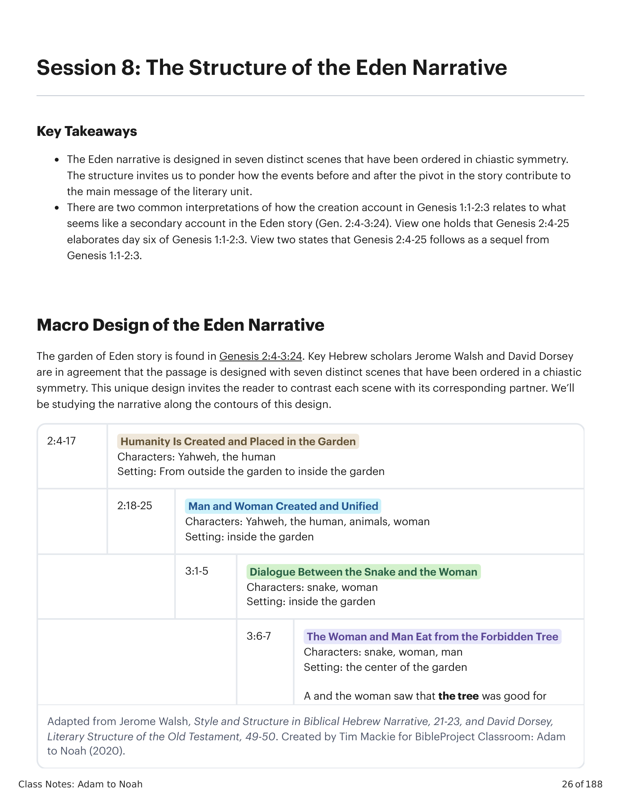
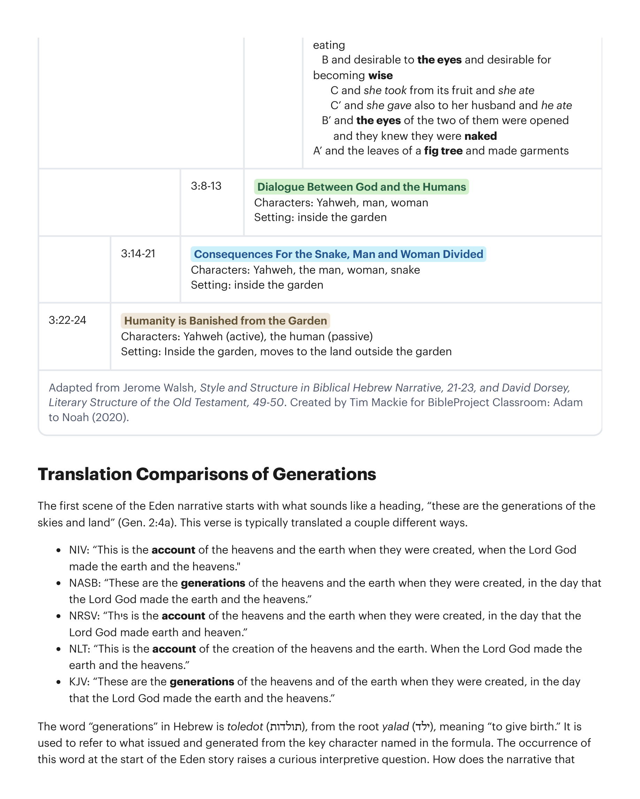
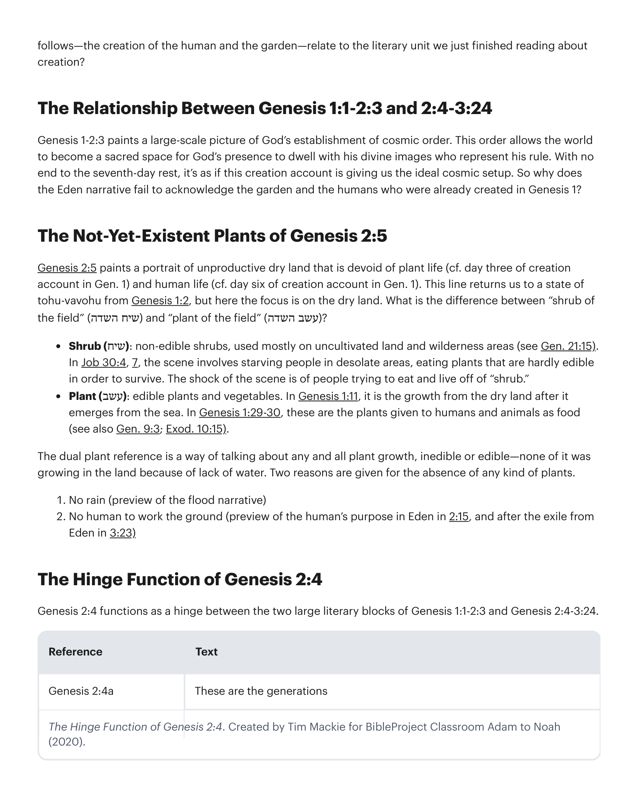
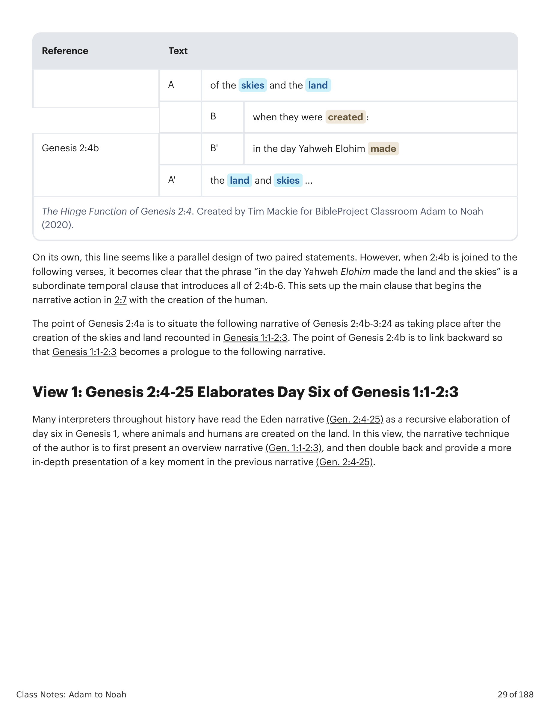
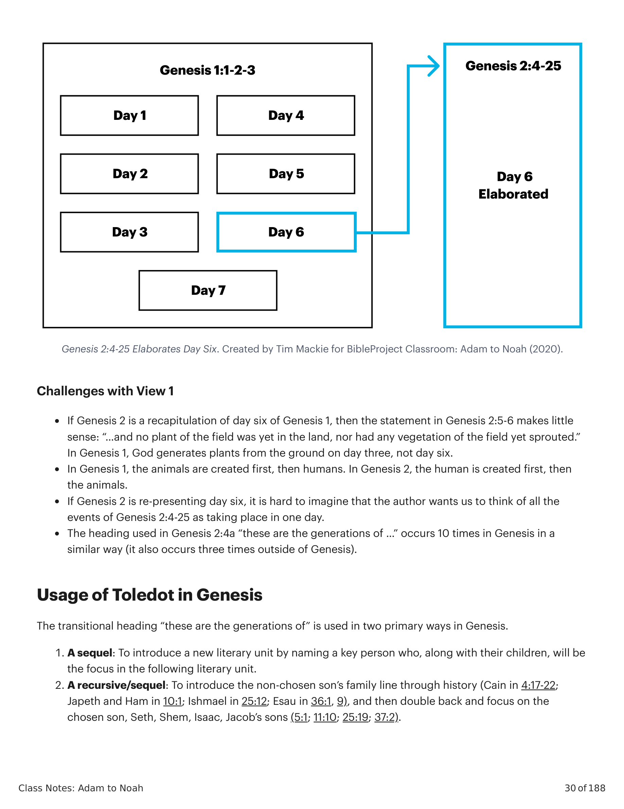
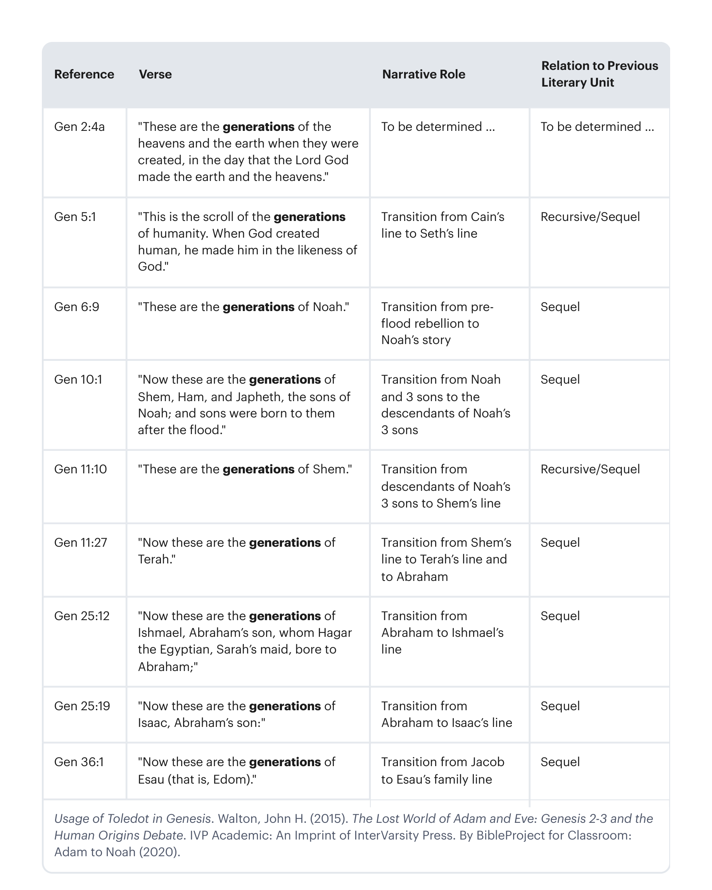
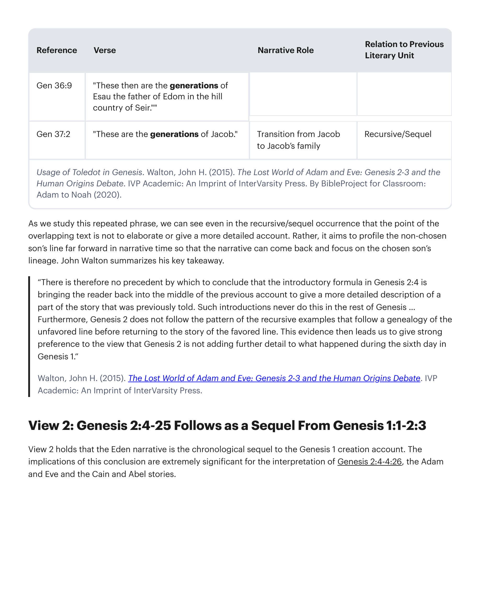
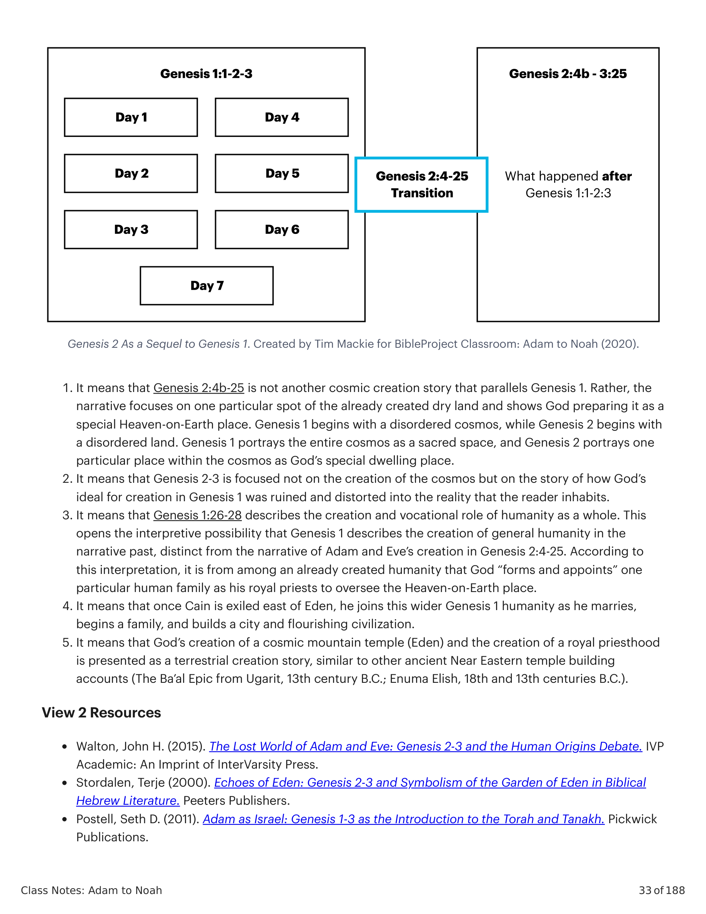
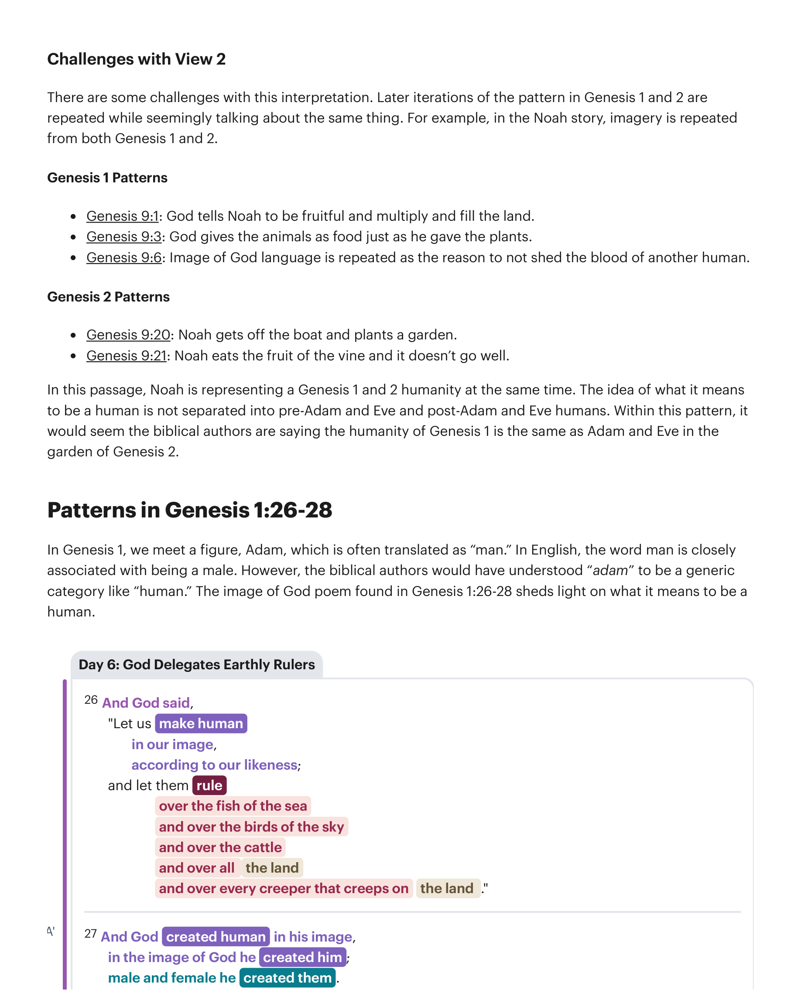
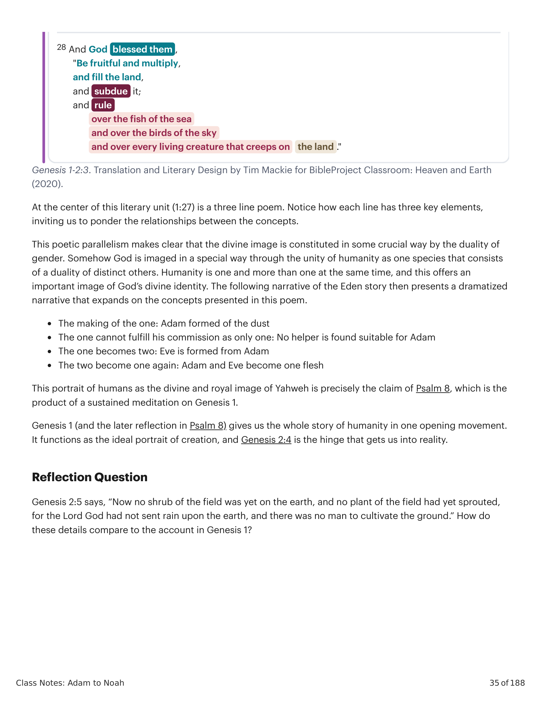

A história do jardim do Éden encontra-se em Gênesis 2:4-3:24. Eruditos hebreus importantes, Jerome Walsh e David Dorsey, concordam que a passagem é desenhada com sete cenas distintas que foram ordenadas em simetria quiasmática. Esse design único convida o leitor a contrastar cada cena com sua parceira correspondente. Estudaremos a narrativa ao longo dos contornos desse design.The garden of Eden story is found in Genesis 2:4-3:24. Key Hebrew scholars Jerome Walsh and David Dorsey are in agreement that the passage is designed with seven distinct scenes that have been ordered in a chiastic symmetry. This unique design invites the reader to contrast each scene with its corresponding partner. We'll be studying the narrative along the contours of this design.


A primeira cena da narrativa do Éden começa com o que soa como um cabeçalho, "estas são as gerações dos céus e da terra" (Gn 2:4a). Este versículo tipicamente é traduzido de algumas maneiras diferentes.The first scene of the Eden narrative starts with what sounds like a heading, "these are the generations of the skies and land" (Gen. 2:4a). This verse is typically translated a couple different ways.
A palavra "gerações" em hebraico é toledot (תולדות), da raiz yalad (ילד), significando "dar à luz". É usada para se referir ao que procedeu e gerou a partir da personagem-chave nomeada na fórmula. A ocorrência dessa palavra no início da história do Éden levanta uma curiosa questão interpretativa. Como a narrativa que se segue — a criação do humano e do jardim — se relaciona com a unidade literária que acabamos de ler sobre a criação?The word "generations" in Hebrew is toledot (תולדות), from the root yalad (ילד), meaning "to give birth." It is used to refer to what issued and generated from the key character named in the formula. The occurrence of this word at the start of the Eden story raises a curious interpretive question. How does the narrative that follows—the creation of the human and the garden—relate to the literary unit we just finished reading about creation?
Gênesis 1-2:3 pinta um quadro em grande escala do estabelecimento da ordem cósmica por Deus. Essa ordem permite que o mundo se torne um espaço sagrado para a presença de Deus habitar com suas imagens divinas que representam seu governo. Sem fim para o descanso do sétimo dia, é como se esse relato de criação estivesse nos dando a configuração cósmica ideal. Então por que a narrativa do Éden falha em reconhecer o jardim e os humanos que já foram criados em Gênesis 1?Genesis 1-2:3 paints a large-scale picture of God's establishment of cosmic order. This order allows the world to become a sacred space for God's presence to dwell with his divine images who represent his rule. With no end to the seventh-day rest, it's as if this creation account is giving us the ideal cosmic setup. So why does the Eden narrative fail to acknowledge the garden and the humans who were already created in Genesis 1?
Gênesis 2:5 pinta um retrato de terra seca improdutiva desprovida de vida vegetal (cf. dia três do relato de criação em Gn 1) e de vida humana (cf. dia seis do relato de criação em Gn 1). Essa linha nos retorna a um estado de tohu-vavohu de Gênesis 1:2, mas aqui o foco está na terra seca. Qual é a diferença entre "arbusto do campo" (שיח השדה) e "planta do campo" (עשב השדה)?Genesis 2:5 paints a portrait of unproductive dry land that is devoid of plant life (cf. day three of creation account in Gen. 1) and human life (cf. day six of creation account in Gen. 1). This line returns us to a state of tohu-vavohu from Genesis 1:2, but here the focus is on the dry land. What is the difference between "shrub of the field" (שיח השדה) and "plant of the field" (עשב השדה)?
Arbusto (שיח): arbustos não comestíveis, usados principalmente em terra não cultivada e áreas selvagens (ver Gn 21:15). Em Jó 30:4, 7, a cena envolve pessoas famintas em áreas desoladas, comendo plantas dificilmente comestíveis para sobreviver. O choque da cena é de pessoas tentando comer e viver de "arbusto".Shrub (שיח): non-edible shrubs, used mostly on uncultivated land and wilderness areas (see Gen. 21:15). In Job 30:4, 7, the scene involves starving people in desolate areas, eating plants that are hardly edible in order to survive. The shock of the scene is of people trying to eat and live off of "shrub."
Planta (עשב): plantas e vegetais comestíveis. Em Gênesis 1:11, é o crescimento da terra seca após emergir do mar. Em Gênesis 1:29-30, estas são as plantas dadas a humanos e animais como alimento (ver também Gn 9:3; Êx 10:15).Plant (עשב): edible plants and vegetables. In Genesis 1:11, it is the growth from the dry land after it emerges from the sea. In Genesis 1:29-30, these are the plants given to humans and animals as food (see also Gen. 9:3; Exod. 10:15).
A dupla referência de plantas é uma maneira de falar de qualquer e todo crescimento vegetal, não comestível ou comestível — nenhum deles estava crescendo na terra por falta de água. Duas razões são dadas para a ausência de qualquer tipo de planta. 1. Nenhuma chuva (prévia do relato do dilúvio) 2. Nenhum humano para trabalhar a terra (prévia do propósito do humano no Éden em 2:15, e após o exílio do Éden em 3:23)The dual plant reference is a way of talking about any and all plant growth, inedible or edible—none of it was growing in the land because of lack of water. Two reasons are given for the absence of any kind of plants. 1. No rain (preview of the flood narrative) 2. No human to work the ground (preview of the human's purpose in Eden in 2:15, and after the exile from Eden in 3:23)
Gênesis 2:4 funciona como uma dobradiça entre os dois grandes blocos literários de Gênesis 1:1-2:3 e Gênesis 2:4-3:24.Genesis 2:4 functions as a hinge between the two large literary blocks of Genesis 1:1-2:3 and Genesis 2:4-3:24.


Por si só, essa linha parece um design paralelo de duas declarações pareadas. No entanto, quando 2:4b se une aos versículos seguintes, torna-se claro que a frase "no dia em que Yahweh Elohim fez a terra e os céus" é uma cláusula temporal subordinada que introduz todo o 2:4b-6. Isso prepara a cláusula principal que inicia a ação narrativa em 2:7 com a criação do humano.On its own, this line seems like a parallel design of two paired statements. However, when 2:4b is joined to the following verses, it becomes clear that the phrase "in the day Yahweh Elohim made the land and the skies" is a subordinate temporal clause that introduces all of 2:4b-6. This sets up the main clause that begins the narrative action in 2:7 with the creation of the human.
O ponto de Gênesis 2:4a é situar a narrativa seguinte de Gênesis 2:4b-3:24 como tendo lugar após a criação dos céus e da terra relatada em Gênesis 1:1-2:3. O ponto de Gênesis 2:4b é ligar para trás, de modo que Gênesis 1:1-2:3 se torne um prólogo para a narrativa seguinte.The point of Genesis 2:4a is to situate the following narrative of Genesis 2:4b-3:24 as taking place after the creation of the skies and land recounted in Genesis 1:1-2:3. The point of Genesis 2:4b is to link backward so that Genesis 1:1-2:3 becomes a prologue to the following narrative.
Muitos intérpretes ao longo da história leram a narrativa do Éden (Gn 2:4-25) como uma elaboração recursiva do sexto dia em Gênesis 1, onde animais e humanos são criados na terra. Nessa visão, a técnica narrativa do autor é apresentar primeiro uma narrativa geral (Gn 1:1-2:3), e então voltar atrás e fornecer uma apresentação mais profunda de um momento chave na narrativa anterior (Gn 2:4-25).Many interpreters throughout history have read the Eden narrative (Gen. 2:4-25) as a recursive elaboration of day six in Genesis 1, where animals and humans are created on the land. In this view, the narrative technique of the author is to first present an overview narrative (Gen. 1:1-2:3), and then double back and provide a more in-depth presentation of a key moment in the previous narrative (Gen. 2:4-25).

Se Gênesis 2 é uma recapitulação do sexto dia de Gênesis 1, então a declaração em Gênesis 2:5-6 faz pouco sentido: "...e nenhuma planta do campo estava ainda na terra, nem qualquer vegetação do campo havia brotado." Em Gênesis 1, Deus gera plantas da terra no dia três, não no dia seis. Em Gênesis 1, os animais são criados primeiro, depois os humanos. Em Gênesis 2, o humano é criado primeiro, depois os animais. Se Gênesis 2 está reapresentando o sexto dia, é difícil imaginar que o autor queira que pensemos em todos os eventos de Gênesis 2:4-25 acontecendo em um dia.If Genesis 2 is a recapitulation of day six of Genesis 1, then the statement in Genesis 2:5-6 makes little sense: "...and no plant of the field was yet in the land, nor had any vegetation of the field yet sprouted." In Genesis 1, God generates plants from the ground on day three, not day six. In Genesis 1, the animals are created first, then humans. In Genesis 2, the human is created first, then the animals. If Genesis 2 is re-presenting day six, it is hard to imagine that the author wants us to think of all the events of Genesis 2:4-25 as taking place in one day.
O cabeçalho usado em Gênesis 2:4a "estas são as gerações de..." ocorre 10 vezes em Gênesis de maneira similar (também ocorre três vezes fora de Gênesis).The heading used in Genesis 2:4a "these are the generations of ..." occurs 10 times in Genesis in a similar way (it also occurs three times outside of Genesis).
O cabeçalho de transição "estas são as gerações de" é usado de duas maneiras principais em Gênesis. 1. Uma sequela: Para introduzir uma nova unidade literária nomeando uma pessoa-chave que, junto com seus filhos, será o foco na unidade literária seguinte. 2. Uma recursiva/sequela: Para introduzir a linhagem do filho não escolhido através da história (Caim em 4:17-22; Jafé e Cam em 10:1; Ismael em 25:12; Esaú em 36:1, 9), e então voltar atrás e focar no filho escolhido, Set, Sem, Isaque, os filhos de Jacó (5:1; 11:10; 25:19; 37:2).The transitional heading "these are the generations of" is used in two primary ways in Genesis. 1. A sequel: To introduce a new literary unit by naming a key person who, along with their children, will be the focus in the following literary unit. 2. A recursive/sequel: To introduce the non-chosen son's family line through history (Cain in 4:17-22; Japheth and Ham in 10:1; Ishmael in 25:12; Esau in 36:1, 9), and then double back and focus on the chosen son, Seth, Shem, Isaac, Jacob's sons (5:1; 11:10; 25:19; 37:2).


Ao estudar essa frase repetida, podemos ver que mesmo na ocorrência recursiva/sequela, o ponto do texto sobreposto não é elaborar ou dar um relato mais detalhado. Em vez disso, visa perfilar a linhagem do filho não escolhido muito à frente no tempo narrativo para que a narrativa possa voltar e focar na linhagem do filho escolhido. John Walton resume seu principal ensinamento.As we study this repeated phrase, we can see even in the recursive/sequel occurrence that the point of the overlapping text is not to elaborate or give a more detailed account. Rather, it aims to profile the non-chosen son's line far forward in narrative time so that the narrative can come back and focus on the chosen son's lineage. John Walton summarizes his key takeaway.
"Não há, portanto, precedente pelo qual concluir que a fórmula introdutória em Gênesis 2:4 está trazendo o leitor de volta para o meio da conta anterior para dar uma descrição mais detalhada de uma parte da história que foi previamente contada. Tais introduções nunca fazem isso no resto de Gênesis ... Além disso, Gênesis 2 não segue o padrão dos exemplos recursivos que seguem uma genealogia da linhagem desfavorecida antes de retornar à história da linhagem favorecida. Essa evidência então nos leva a dar forte preferência à visão de que Gênesis 2 não está adicionando mais detalhes ao que aconteceu durante o sexto dia em Gênesis 1.""There is therefore no precedent by which to conclude that the introductory formula in Genesis 2:4 is bringing the reader back into the middle of the previous account to give a more detailed description of a part of the story that was previously told. Such introductions never do this in the rest of Genesis ... Furthermore, Genesis 2 does not follow the pattern of the recursive examples that follow a genealogy of the unfavored line before returning to the story of the favored line. This evidence then leads us to give strong preference to the view that Genesis 2 is not adding further detail to what happened during the sixth day in Genesis 1."
Walton, John H. (2015). The Lost World of Adam and Eve: Genesis 2-3 and the Human Origins Debate. IVP Academic.Walton, John H. (2015). The Lost World of Adam and Eve: Genesis 2-3 and the Human Origins Debate. IVP Academic.
A Visão 2 sustenta que a narrativa do Éden é a sequela cronológica do relato de criação de Gênesis 1. As implicações dessa conclusão são extremamente significativas para a interpretação de Gênesis 2:4-4:26, as histórias de Adão e Eva e de Caim e Abel.View 2 holds that the Eden narrative is the chronological sequel to the Genesis 1 creation account. The implications of this conclusion are extremely significant for the interpretation of Genesis 2:4-4:26, the Adam and Eve and the Cain and Abel stories.

Há alguns desafios com essa interpretação. Iterações posteriores do padrão em Gênesis 1 e 2 são repetidas enquanto parecem falar da mesma coisa. Por exemplo, na história de Noé, a imagética é repetida tanto de Gênesis 1 quanto de 2.There are some challenges with this interpretation. Later iterations of the pattern in Genesis 1 and 2 are repeated while seemingly talking about the same thing. For example, in the Noah story, imagery is repeated from both Genesis 1 and 2.
Gênesis 1 Padrões: Gn 9:1: Deus diz a Noé para frutificar e multiplicar e encher a terra. Gn 9:3: Deus dá os animais como alimento assim como deu as plantas. Gn 9:6: linguagem de imagem de Deus é repetida como razão para não derramar o sangue de outro humano. Gênesis 2 Padrões: Gn 9:20: Noé desce do barco e planta um jardim. Gn 9:21: Noé come o fruto da videira e não dá certo. Nessa passagem, Noé está representando uma humanidade de Gênesis 1 e 2 ao mesmo tempo. A ideia do que significa ser humano não é separada em pré-Adão e Eva e pós-Adão e Eva humanos. Dentro desse padrão, pareceria que os autores bíblicos estão dizendo que a humanidade de Gênesis 1 é a mesma que Adão e Eva no jardim de Gênesis 2.Genesis 1 Patterns: Genesis 9:1: God tells Noah to be fruitful and multiply and fill the land. Genesis 9:3: God gives the animals as food just as he gave the plants. Genesis 9:6: Image of God language is repeated as the reason to not shed the blood of another human. Genesis 2 Patterns: Genesis 9:20: Noah gets off the boat and plants a garden. Genesis 9:21: Noah eats the fruit of the vine and it doesn't go well. In this passage, Noah is representing a Genesis 1 and 2 humanity at the same time. The idea of what it means to be a human is not separated into pre-Adam and Eve and post-Adam and Eve humans. Within this pattern, it would seem the biblical authors are saying the humanity of Genesis 1 is the same as Adam and Eve in the garden of Genesis 2.
Em Gênesis 1, encontramos uma figura, Adão, que frequentemente é traduzida como "homem". Em inglês, a palavra homem está intimamente associada a ser masculino. No entanto, os autores bíblicos teriam entendido "adam" como uma categoria genérica como "humano". O poema da imagem de Deus encontrado em Gênesis 1:26-28 ilumina o que significa ser humano.In Genesis 1, we meet a figure, Adam, which is often translated as "man." In English, the word man is closely associated with being a male. However, the biblical authors would have understood "adam" to be a generic category like "human." The image of God poem found in Genesis 1:26-28 sheds light on what it means to be a human.


No centro desta unidade literária (1:27) está um poema de três linhas. Observe como cada linha tem três elementos-chave, convidando-nos a ponderar as relações entre os conceitos. Esse paralelismo poético deixa claro que a imagem divina é constituída de alguma forma crucial pela dualidade de gênero. De alguma forma Deus é imagem de uma maneira especial através da unidade da humanidade como uma espécie que consiste em uma dualidade de outros distintos. A humanidade é uma e mais do que uma ao mesmo tempo, e isso oferece uma imagem importante da identidade divina. A narrativa seguinte da história do Éden então apresenta uma narrativa dramatizada que expande os conceitos apresentados neste poema.At the center of this literary unit (1:27) is a three line poem. Notice how each line has three key elements, inviting us to ponder the relationships between the concepts. This poetic parallelism makes clear that the divine image is constituted in some crucial way by the duality of gender. Somehow God is imaged in a special way through the unity of humanity as one species that consists of a duality of distinct others. Humanity is one and more than one at the same time, and this offers an important image of God's divine identity. The following narrative of the Eden story then presents a dramatized narrative that expands on the concepts presented in this poem.
A feitura do uno: Adão formado do pó. O uno não pode cumprir sua comissão sendo apenas um: nenhum auxílio é encontrado adequado para Adão. O uno se torna dois: Eva é formada de Adão. Os dois se tornam um de novo: Adão e Eva se tornam uma só carne. Esse retrato dos humanos como a imagem divina e real de Yahweh é precisamente a afirmação do Salmo 8, que é o produto de uma meditação sustentada sobre Gênesis 1. Gênesis 1 (e a reflexão posterior em Salmo 8) nos dá toda a história da humanidade em um movimento de abertura. Ele funciona como o retrato ideal da criação, e Gênesis 2:4 é a dobradiça que nos leva à realidade.The making of the one: Adam formed of the dust. The one cannot fulfill his commission as only one: No helper is found suitable for Adam. The one becomes two: Eve is formed from Adam. The two become one again: Adam and Eve become one flesh. This portrait of humans as the divine and royal image of Yahweh is precisely the claim of Psalm 8, which is the product of a sustained meditation on Genesis 1. Genesis 1 (and the later reflection in Psalm 8) gives us the whole story of humanity in one opening movement. It functions as the ideal portrait of creation, and Genesis 2:4 is the hinge that gets us into reality.
Gênesis 2:5 diz, "Ora, não havia ainda nenhum arbusto do campo sobre a terra, e nenhuma planta do campo havia brotado, porque o Senhor Deus não tinha enviado chuva sobre a terra, e não havia homem para cultivar o solo." Como esses detalhes se comparam ao relato em Gênesis 1?Genesis 2:5 says, "Now no shrub of the field was yet on the earth, and no plant of the field had yet sprouted, for the Lord God had not sent rain upon the earth, and there was no man to cultivate the ground." How do these details compare to the account in Genesis 1?